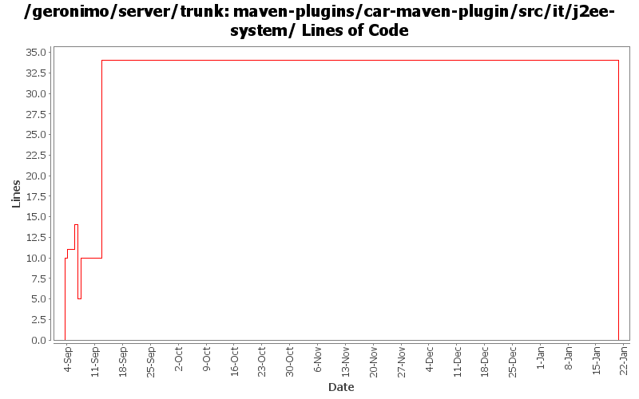

[root]/maven-plugins/car-maven-plugin/src/it/j2ee-system
 src
(0 files, 0 lines)
src
(0 files, 0 lines)
 main
(0 files, 0 lines)
main
(0 files, 0 lines)
 plan
(0 files, 0 lines)
plan
(0 files, 0 lines)
 plan
(0 files, 0 lines)
plan
(0 files, 0 lines)
 test
(0 files, 0 lines)
test
(0 files, 0 lines)
 resources
(0 files, 0 lines)
resources
(0 files, 0 lines)
 META-INF
(0 files, 0 lines)
META-INF
(0 files, 0 lines)

| Author | Changes | Lines of Code | Lines per Change |
|---|---|---|---|
| Totals | 20 (100.0%) | 61 (100.0%) | 3.0 |
| jdillon | 9 (45.0%) | 32 (52.5%) | 3.5 |
| djencks | 8 (40.0%) | 25 (41.0%) | 3.1 |
| prasad | 1 (5.0%) | 2 (3.3%) | 2.0 |
| rickmcguire | 1 (5.0%) | 1 (1.6%) | 1.0 |
| jlaskowski | 1 (5.0%) | 1 (1.6%) | 1.0 |
(GERONIMO-3771) Moved maven-plugins/* to buildsupport/*, updated groupId to org.apache.geronimo.buildsupport
0 lines of code changed in 5 files:
GERONIMO-3704 Convert the activation and javamail dependencies to non-snapshot versions.
1 lines of code changed in 1 file:
GERONIMO-3588 Upgrade XStream to 1.2.2
1 lines of code changed in 1 file:
Add some comments as to what these closures do
6 lines of code changed in 1 file:
Attempt to validate in a platform neutral fashion
22 lines of code changed in 1 file:
Update properties
4 lines of code changed in 2 files:
GERONIMO-3453 Add ability to derive dependencies from maven dependencies in the actual pom (original model)
8 lines of code changed in 1 file:
GERONIMO-3453 Add some tests for geronimo-plugin.xml generation
3 lines of code changed in 2 files:
GERONIMO-3330 GERONIMO-3453 More changes. Plugin installer now installs stuff into config.xml, config-substitutions.properties, and external_aliases.properties. Car-maven-plugin more or less gets this stuff into the geronimo-plugin.xml.
3 lines of code changed in 1 file:
* changing the parent to maven-plugins. old parent configs not built yet.
2 lines of code changed in 1 file:
GERONIMO-3330 GERONIMO-3453 new plugin schema. IDEA's subversion integration does not find all the modified files so here are some of the other ones
1 lines of code changed in 1 file:
GERONIMO-3330 GERONIMO-3453 Use the new plugin schema Paul came up with. Use jaxb for geronimo-plugin xml handling. Modify the car-maven-plugin to generate geronimo-plugin.xml and explicitly specify the dependencies for the plan in pom.xml. This introduces several more jaxb libraries in lib which I hope can be removed again. Also the console plugin handling is barely working.
10 lines of code changed in 3 files: